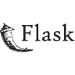
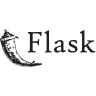

Hello, my name is Franco, I am a software development technician. Throughout my academic training I have acquired solid knowledge in several programming languages and technologies that I am sure will be of great value in my professional future.
My knowledge includes Python, JavaScript, SQL, Flask, Git, Git Hub, Node.js, among others. In Python, I have developed skills to create desktop applications with the help of libraries like TKinter and built web projects using frameworks like Flask. In JavaScript I have also developed very fun and interesting projects. I also have knowledge in relational database development and design, use of Git as a version controller and other tools.
One of my main goals as a software developer is to keep growing and expanding my knowledge in the technologies I already know, and also explore new areas such as data science and AI. In addition, I am interested in deepening in the development of scalable applications and in the implementation of agile development practices.
Beyond the professional field and my passion for development and technology, I also have several hobbies. I really enjoy soccer, watching movies, playing video games with my friends, reading a novel from time to time and cooking. Obviously, in many of these activities and in my day to day life in general, I can never miss a good Mate.
In short, I consider that I have knowledge and tools with which I can build solutions, both in a dynamic and group work environment, as well as an individual development environment.
My Skills:


 

.png)